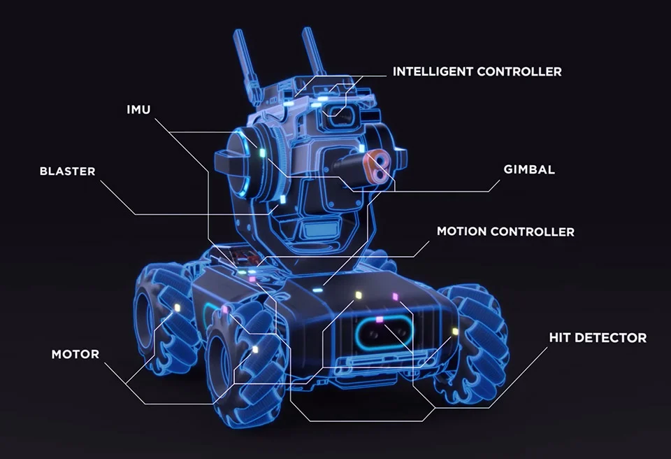
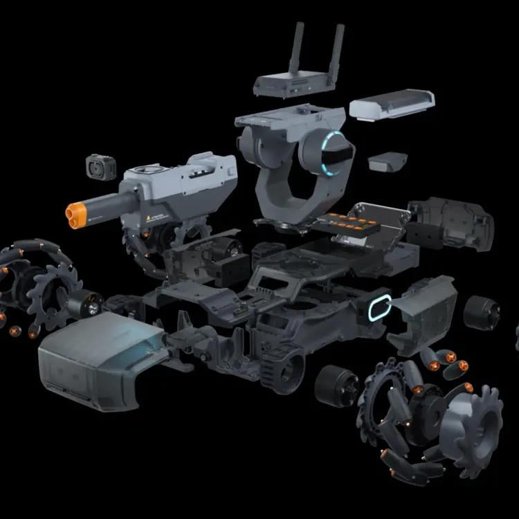
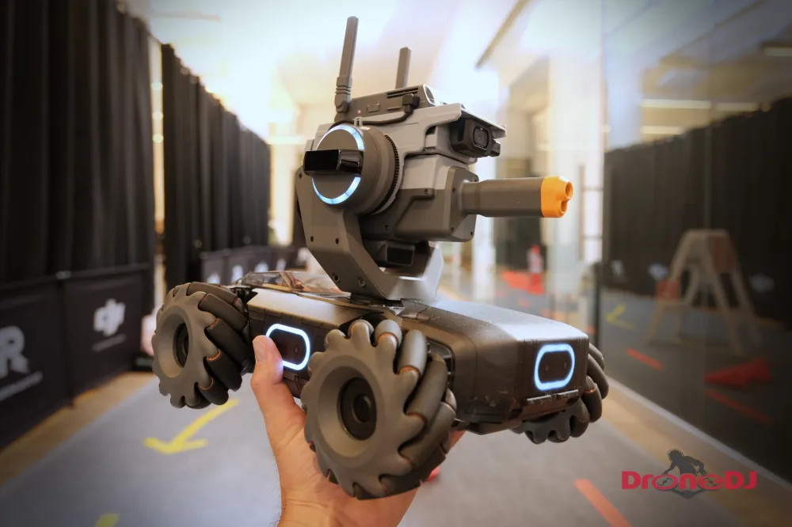
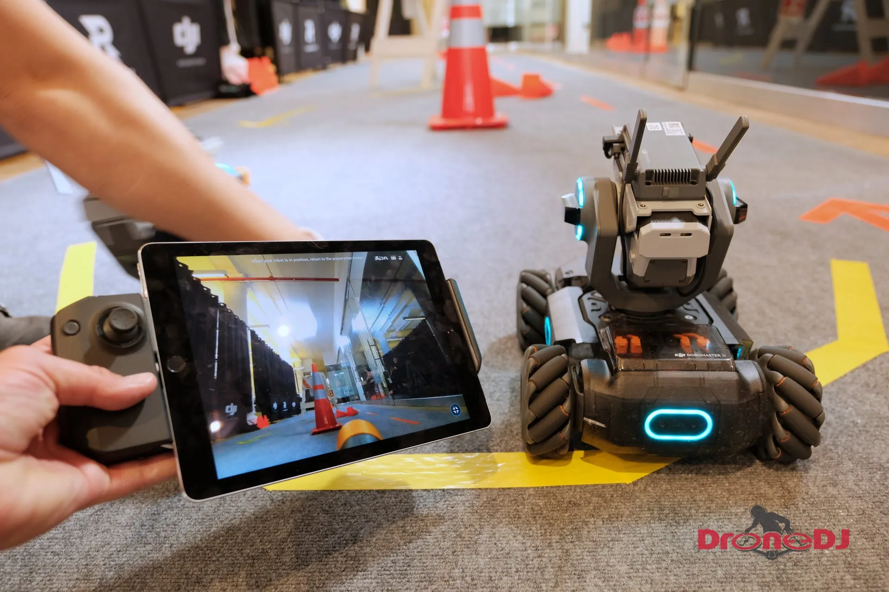
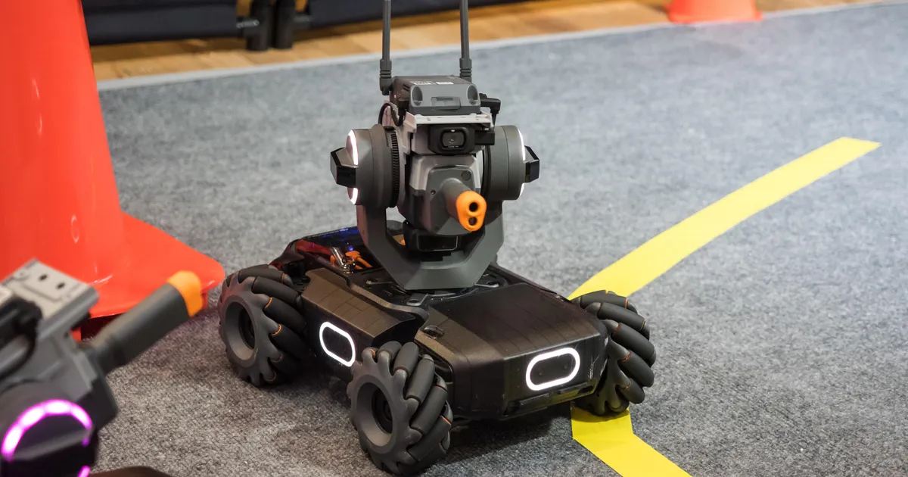
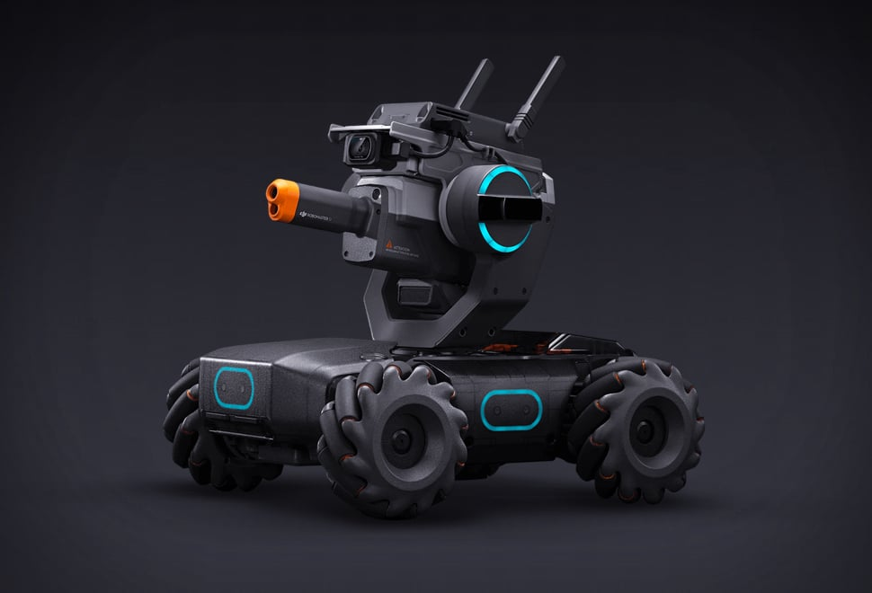
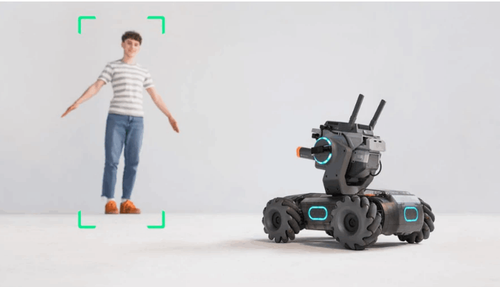

AI Website Software
Intelligens páncél-érzékelők (6 db) - Érzékelik, ha a robotot infra sugár vagy zselés golyó találja el.
IMU (Inercia-érzékelő) - Nyomon követi a robot elfordulását és dőlésszögét a pontosabb mozgásvezérléshez.
Vonalkövető szenzorok - Képesek egy földre rajzolt vonalat követni programozott módon.
Vision Marker felismerés - Felismeri az előre kinyomtatott jelölőket (számok, karakterek), amikre programozott reakciót adhat.
Gesztus felismerés - Kezeddel végzett mozdulatokat is felismer a programozott viselkedéshez.
Taps felismerés - A S1 reagál a tapsra, amit akár programozott feladatindításra is használhatsz.
Robot- és ember felismerés - A kamera és látórendszer segítségével más S1 robotokat vagy embereket is képes követni
Tank-szerű robot test 4 Mecanum kerékkel – így minden irányba (előre, hátra, oldalra, átlósan) mozoghat.
Forgatható gimbal a „fegyverrel” (infra + zselés golyó lövéssel), ami -24°–+41° (pitch) és ±270° (yaw) tartományban forog.
HD FPV kamera a robot elején, 120°-os látómezővel.
Képminőség: max. 5 MP fotó és 1080p 30fps videó.
A kamera élőképet közvetít a vezérlő eszközre (telefon/tablet), és gépi látási feladatokra is használható.
4 × M3508I brushless (kefe nélküli) motor
– precíz vezérléssel és jó teljesítménnyel.
Hall-effekt szenzorok a pontos sebesség és helyzet méréséhez.
Omnidirekcionális mozgás a Mecanum kerekekkel → könnyed irányváltás.
Scratch 3.0 támogatás – kezdőknek vizuális blokkokkal programozható.
Python támogatás – haladóbb robotikai és AI feladatokhoz.
Beépített tananyagok és RoboAcademy kurzusok a tanuláshoz.
Szerelhető DIY jelleg, így már az összeszerelés is tanulási lehetőség.
Beépített játékmódok (versenyek, célgyakorlatok, többjátékos csaták).
2400 mAh Li‑Po akku, amely kb. 35 perc működést tesz lehetővé egy feltöltéssel.
Wi-Fi vezérlés mobilalkalmazáson keresztül.

Scratch‑tel és Python‑nal programozható, így kezdők és haladók is gyakorolhatják a logikus gondolkodást, algoritmusírást és szoftveres vezérlést.
A Vision Marker, vonalkövetés és gesztusfelismerés funkciók lehetővé teszik a valós idejű interakciók programozását.

Különböző robotikai és mérnöki koncepciók tanulmányozhatók:
motorvezérlés
szenzorfeldolgozás
feedback rendszerek
Kiváló iskolai laborokhoz, STEM klubokhoz és versenyfeladatokhoz.

A RoboMaster S1 részt vehet harc- és célgyakorlatokban:
zselés golyókkal célpontok lelövése
pontszerző „csaták” más S1 robotokkal
akadálypályák leküzdése, vonalkövetés
Ezek a versenyek fejlesztik a taktikai gondolkodást, gyors döntéshozatalt és csapatmunkát.

A robot képes kamerakép feldolgozására:
objektumkövetés
vonalkövetés
gesztusfelismerés
Ez lehetővé teszi AI‑projektek és gépi látás gyakorlását oktatási szinten.

Fejlesztők és diákok kísérletezhetnek automatizált döntési algoritmusokkal, érzékelő‑adat feldolgozással és robotközi kommunikációval.
Ideális kísérleti robotikai projektekhez és prototípusokhoz.

Az S1-et lehet egyedül vagy másokkal együtt játszani, például robotcsatákban, akadályversenyeken vagy céltáblás játékokon.
A hangra, mozdulatokra és érintésre való reagálás növeli a játékélményt és a kreatív feladatok lehetőségét.
RoboMaster S1 összerakása
RoboMaster S1 párbaj
AI Website Software